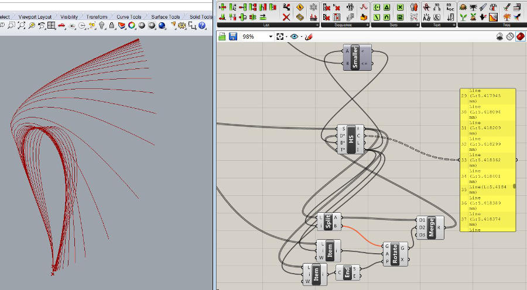
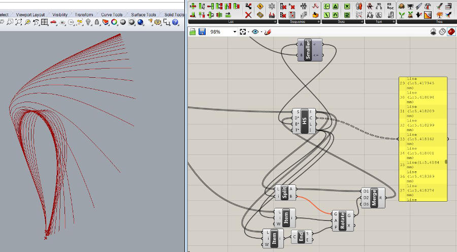
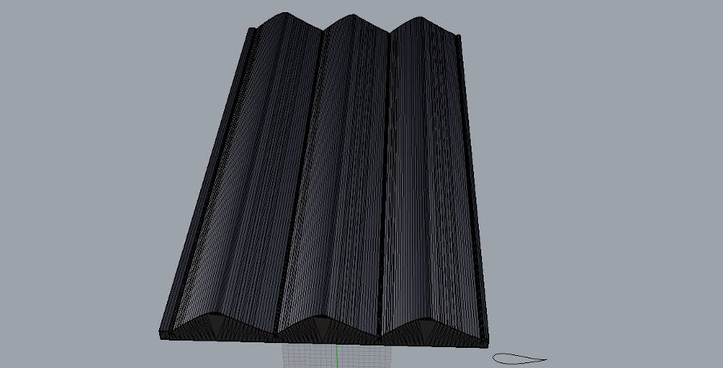
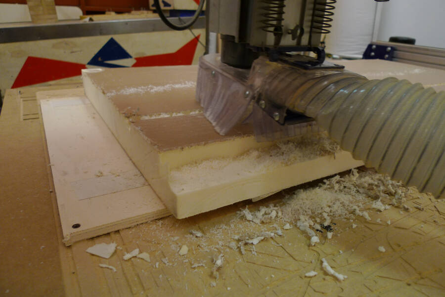
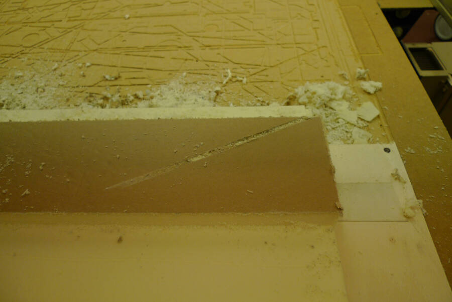
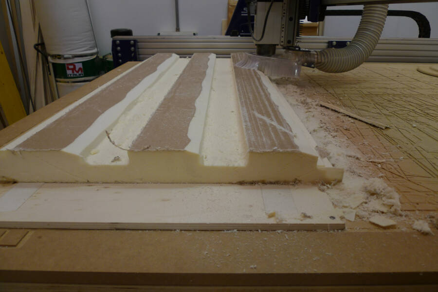
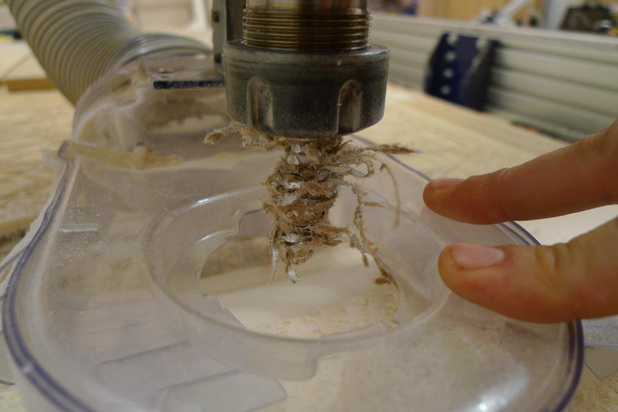
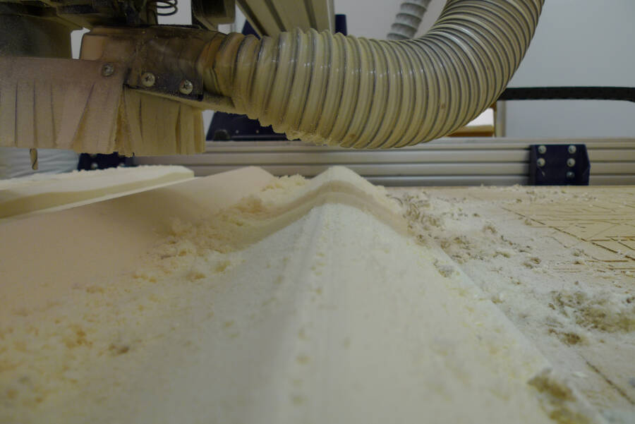
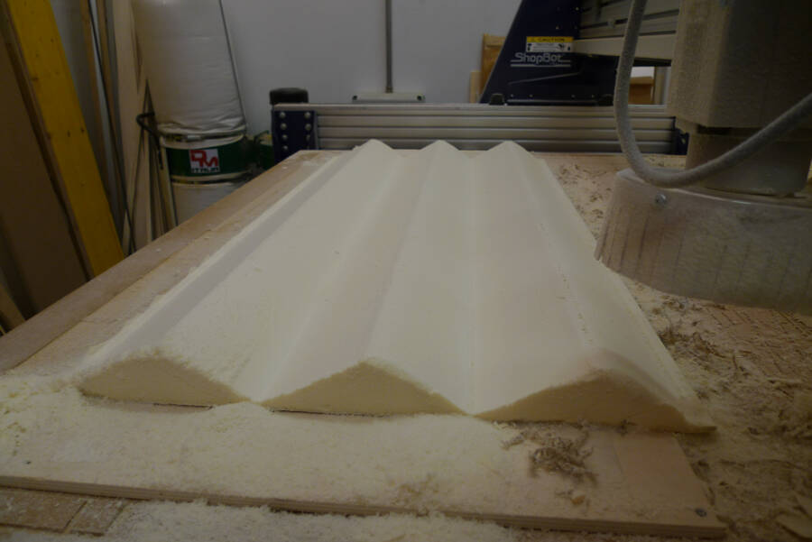
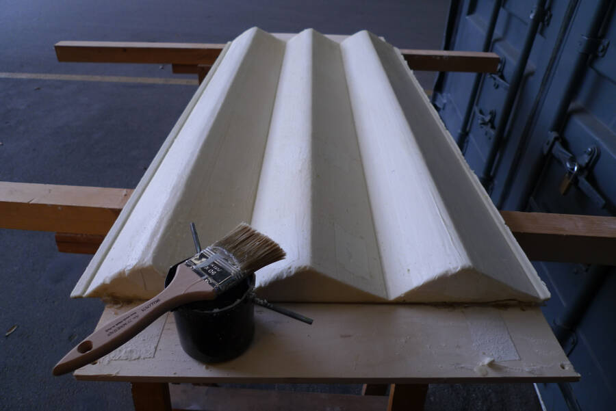

12. Composites
Project
To test the resistence and the flexibility od the composite, I decided to make a low-cost Darrieus wind turbine. A Darrieus is a vertical axis wind turbine, pretty simple and robust, it's less sensitive to design mistake than horizontal axis wint turbines, and that's why it's more appropriate to be produced with a minimum budget.
Instead of carve the blade profile and cover it with fibers and resin, I want to make a reusable mold without divide the blade. I used this reference for the profile:
 Now the problem was to unroll it without bend too much some parts. To do it I made a small Grasshopper sketch, that analize the curvature of a certain number of point on the curve and reduce it proportionally.

Here the grasshopper file
Now the problem was to unroll it without bend too much some parts. To do it I made a small Grasshopper sketch, that analize the curvature of a certain number of point on the curve and reduce it proportionally.

Here the grasshopper file
From the unfolded curve I did the 3D model of the mold.

Here the *.stl file
Milling
I used a very basic polyurethane, milled with the Shopbot. To speed up the process i used a very simple roughing with a depth of 0.5 inches.

I attached the foam to a plywood panel to keep it standing still, but it ended up that the double side tape wasn't strong enough. After a while the corner start to detach. as a consequence the cnc left a cut where it wasn't suppose to be.

I used some hot glue on the corner to be able to go on without problems.
When I started the finishing, I noticed that the head of the spindle was going to hit the foam because of the too quick roughing. To avoind it, I paused the machine and cut the extra material with a cutter.

The top layer of this insulation polyurethane foam is a double layer sheet made out of paper and aluminium. After a while I stopped the machine because of a wierd noise and i checked the end mill: the aluminium was covering the tip, making it uncapable of cutting.

During the finishing the vacuum tube was too close to the piece and sometimes it touched the foam. Being a very soft material that was enough to ruin the surface

Use some tape to pull up the tube was enough to go on with the finishing without any further trouble. The final result was pretty nice

Coating the mold
Folloging the same idea of using very cheap materials that could last for few uses, I decided to coat the mold with hot wax. To don't burn it while you melt it, I used a metal ashtray The final result was decent but not perfect. The wax works pretty well, but it's hard to have a continuous layer, in particular if you want to get to a certain thikness. I decided to have a less polished finishing but with a more robust coating 